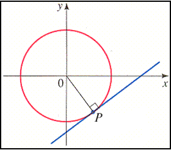

Tangents to Conic Section
| Conic Section | Standard Form of Equation | Slope of Tangent @ (x,y) |
|---|---|---|
| Circle | $(x-h)^2+(y-k)^2=r^2$ | $-{(x-h)}/{(y-k)}$ |
| Parabola | $(y-k)^s=4p(x-h)$ | ${2p}/{(y-k)}$ |
| $(x-h)^s=4p(y-k)$ | ${(x-h)}/{2p}$ | |
| Ellipse | ${(x-h)^2}/{a^2}+{(y-k)^2}/{b^2}=1$ | $-{b^2(x-h)}/{a^2(y-k)}$ |
| ${(y-k)^2}/{a^2}+{(x-h)^2}/{b^2}=1$ | $-{a^2(x-h)}/{b^2(y-k)}$ | |
| Hyperbola | ${(x-h)^2}/{a^2}-{(y-k)^2}/{b^2}=1{$ | ${b^2(x-h)}/{a^2(y-k)}$ |
| ${(y-k)^2}/{a^2}+{(x-h)^2}/{b^2}=1$ | ${a^2(x-h)}/{b^2(y-k)}$ |
Equation of the Tangent to a Circle
Find the equation of the tangent to $x^2+y^2=25\text" at "(3,-4)$
$\table (h,k)=(0,0)\text" & "(x_1,y_1)=(3,-4); m=-{(x-h)}/{(y-k)}=-{(3-0)}/{(-4-0)}=3/4$ $\table \html'<b class="underline">Pt-Slope Form:</b>'; y-y_1=m(x-x_1); y+4=3/4(x-3); y+4=3/4x-9/4; y=3/4x-25/4$
Find the equation of the tangent to $x^2+y^2=25\text" at "(3,-4)$
$\table (h,k)=(0,0)\text" & "(x_1,y_1)=(3,-4); m=-{(x-h)}/{(y-k)}=-{(3-0)}/{(-4-0)}=3/4$ $\table \html'<b class="underline">Pt-Slope Form:</b>'; y-y_1=m(x-x_1); y+4=3/4(x-3); y+4=3/4x-9/4; y=3/4x-25/4$
Normal to a Curve at any given Point
the line perpendicular to the tangent at that point
Equation of the Normal to a Curve
Find the equation of the normal or perpendicular to $x^2+y^2=25\text" at "(3,-4)$
the line perpendicular to the tangent at that point
Equation of the Normal to a Curve
Find the equation of the normal or perpendicular to $x^2+y^2=25\text" at "(3,-4)$
Pt-Slope Form:
Video| $\table y-y_1=m(x-x_1); y+4=-4/3(x-3); y+4=-4/3x+4; y=-4/3x$ |  |